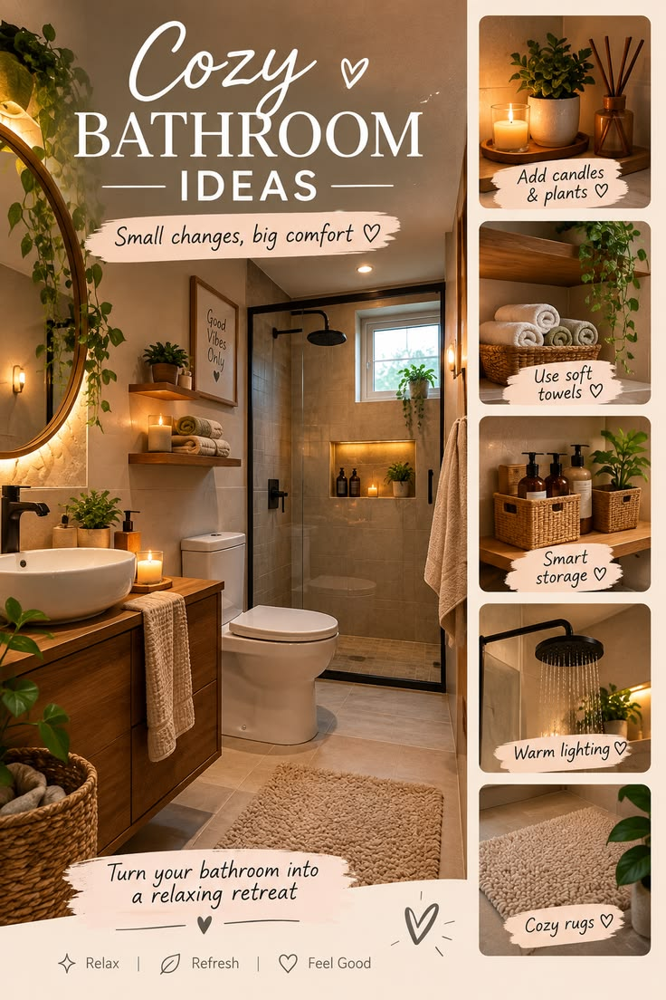

10 Cozy Bedroom Ideas for a Relaxing Home
Your bedroom should feel comfortable, peaceful and welcoming. You don't need a huge budget to create a cozy space. Small changes in lighting, bedding, colors and decor can make a big difference.
1. Use Warm Lighting
Replace harsh lighting with warm lamps, bedside lights or soft decorative lighting. Warm light can create a relaxing atmosphere in the evening.
2. Add Soft Bedding
Layer your bed with comfortable sheets, blankets and pillows. Mixing different textures can make the room feel more inviting.
3. Choose Calm Colors
Neutral shades such as cream, beige, white and soft brown can create a peaceful bedroom environment.
4. Add a Small Rug
A soft rug beside the bed can add warmth and comfort while making the room feel more finished.
5. Bring in Plants
A few indoor plants can add a natural element to your bedroom. Choose plants that suit your room's lighting conditions.
6. Keep the Bed the Focal Point
Keep the area around your bed clean and uncluttered. A well-styled bed can become the main feature of the room.
7. Add Wall Art
Simple artwork, prints or photographs can personalize the bedroom without taking up floor space.
8. Use Natural Textures
Materials such as wood, cotton, linen and woven baskets can give your bedroom a warm and natural appearance.
9. Create a Reading Corner
If you have enough space, add a comfortable chair and a small side table to create a simple reading corner.
10. Keep Clutter Under Control
A tidy bedroom usually feels more relaxing. Use baskets, drawers and storage boxes to keep everyday items organized.
📌 Save this idea on Pinterest 📌 Save this idea on PinterestFinal Thoughts
Creating a cozy bedroom doesn't require expensive furniture. Start with small improvements such as better lighting, comfortable bedding, calming colors and simple decorations.
Save this guide for your next bedroom makeover!